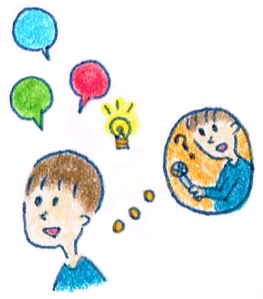

21 : 話が続かない悩みを解決するコツ
・質問されたときにドキっとする方へ

皆さんこんにちは。ところで長いもので連載も結構な数になってきました。いやあ！えらい！私！会社にはアシスタントの稲垣さんや大川先生がいるのですが、あんまり褒めてくれないので自分で自分を褒めてなんとかごまかしているのです。むなしい・・・誰か褒めてっ！という感じです。
さてさて、今回は発話の実践的なスキルに入っていきます。皆さんはこんな悩みを抱えていませんか？
・ 質問を受けても短文で終わってしまう
・ 何を話していいかわからない
・ 話題を作るのが下手
・ いつも堅い話になってしまう
私も以前は本当に話すことや話し方に自信がなく、質問を振らないで〜という感じの期間が長くありました。ですが、日常のコミュニケーションで質問を振られないなんてことはまずありませんよね。
ですので、質問を振ってほしくないという悩みを抱えていると、必然的にコミュニケーションそのものが嫌になってきてしまいます。 これらの問題を解決するには、1つは内容を置いておいて長く話す練習をすることです。
・話が続かない！話し方の悩みを解決するコツ
ある程度のボリュームを持たせて話せるようになると以前よりは自信がついてくるでしょう。 しかし、長く話せって言われても困る方が多いと思います。 そこで会話を続けるための話し方のスキルを学習していきましょう。
今回学ぶのは自分へ質問法です。
自分へ質問法とは、自分の中に聞き手を作り、その聞き手から自分に質問をすることで、会話を続けていく方法です。
「自分の中に聞き手を作る」とは、どういうことなのでしょう。具体的な例を見てしまったほうが早いと思うので、例で解説します。
例えば、聞き手の鈴木さんから「好きな町はどこですか？」と聞かれたとしましょう。
このとき、発話の力がない方ですと、「そうですね〜。ご飯屋さんとか遊ぶところがたくさんあるので川崎が好きですよ！」と短文で終わってしまうでしょう。これでは、いつまでたっても自分の発話スキルは向上していきません。
ここでもし皆さんが鈴木さんだとしたら、どんな質問をするでしょうか？
「川崎だとどの辺で遊んでいることが多いんですか？」
「おいしいお店とかあるのですか？」
と聴く方が多いと思います。そこでこの質問を変換して、自分に質問をしてしまうのです。
↓↓
「川崎だとどの辺で遊んでいることが多いのかというと」「おいしいおみせはどこかっていうと」
↓↓
変換した自分への質問を具体的に使うと下のようになります。
具体的には
「そうですね〜。ご飯屋さんがたくさんあるので川崎が好きですよ！ どのお店がおいしいのかというと（自分への質問）、ニューヨーク屋というお店で、アメリカサイズにハンバーガーが食べられるんです。 お店の雰囲気がアメリカにいったような気持ちになれるのでテンション上がりますよ」
という感じですね。もし皆さんが自分の話し方で「話を長くできない」という悩みを抱えていたら、自分への質問をする習慣をつけてみてください。自然と会話を長く続けることができるようになりますよ。
練習問題
聞き手
「見るのが好きなスポーツとかありますか？」
話し手
「そうですね〜メジャーリーグが好きなのでダルビッシュの試合とかよく見ますよ！」
問題
皆さんが話し手だとして、自分への質問を3つ考えてみてください。
↓↓
考えてみましたか？
↓↓
それでは答えをみてみましょう。
・いままで思い出に残っている試合は・・・
・ダルビッシュのどの辺が魅力かと言うと
・いまのダルビッシュの成績はと言うと
という感じになります。あとはまた話せる範囲内でお話していく感じですね！
話がすぐに終わってしまう！という方は是非自分への質問法を参考に、話し方を変えてみてください。
 |
|